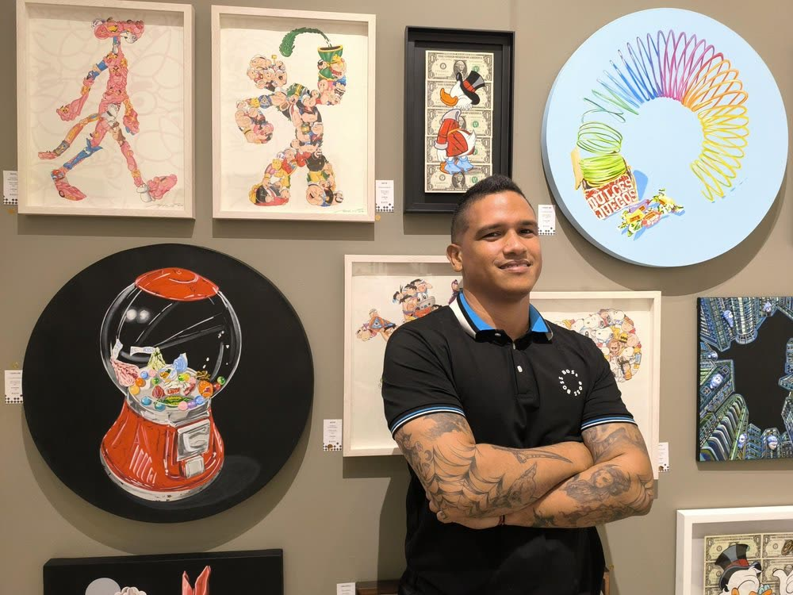

Artists · 3 works
Federico Lobo

Federico Lobo Hernández is a Colombian visual artist working primarily across painting, drawing, and printmaking. He studied Plastic Arts at the Universidad del Atlántico in Barranquilla, developing a multidisciplinary practice centered on memory, emotion, color, and the visual transformation of everyday experience.
Childhood and collective memory occupy a central place in Lobo’s work. His images draw on games, objects, music, urban surroundings, and familiar moments that persist as emotional traces. Through these elements, he creates visual narratives in which personal recollection intersects with experiences shared across generations and communities.
His creative process is intuitive and fluid. Works often begin with stains, gestures, and playful interactions between light and color. As the composition develops, these apparently abstract elements gradually reveal recognizable or realistic forms. This movement between spontaneity and representation allows instinct, memory, and observation to coexist within the same image.
Music also plays an important role in his practice, influencing the rhythm, atmosphere, and emotional structure of his compositions. Color functions not only as a descriptive element but as a carrier of sensation, while light helps transform ordinary subjects into images charged with memory. Rather than presenting a fixed narrative, Lobo creates open visual fields that encourage viewers to connect the work with their own recollections and emotional experiences.
His projects include Mezclas precolombinas, selected for the I Salón de Artes Plásticas y Visuales de Barranquilla in 2015; Arroyo peligroso, presented at the Bienal de Artes Visuales del Atlántico in 2017; and the recent pictorial project Dulces Juegos, developed in 2024. These works reflect his continuing interest in childhood, play, cultural memory, and the everyday landscapes of the Colombian Caribbean.
Lobo has presented solo exhibitions at La Interface in Barranquilla in 2021, the Alliance Française in Barranquilla in 2022, and Galería La Aduana in 2023. His work has also been included in group exhibitions and visual arts salons in Barranquilla, Bogotá, Santa Marta, Cajicá, and Medellín, including the XI International Art Biennial of Suba in Bogotá in 2019.